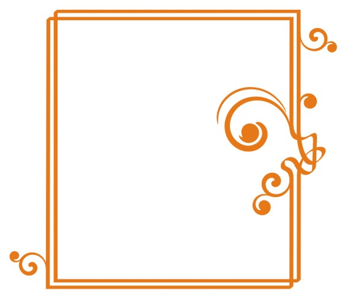
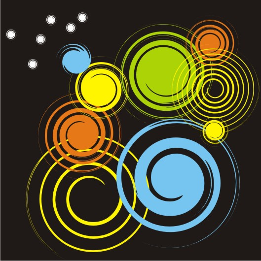

Элементы для творчества
В настоящее время существует достаточное количество готового клипарта.
Но, бывает момент, когда нет времени искать, или хочется сделать что-то своё...
Предлагаю поэксперементировать.
Для начала:
1. Рисуем окружность
2. Копируем. Для этого, удерживая Ctrl, отводим кружек вправо, и не отпуская левой кнопки мыши, нажимаем правую. Возле курсора появится "+".
3. Применяем "Интерактивное перетекание"
P.S. По умолчанию получится 22 объекта, т.е. 2 сделанные нами, и 20 — процесс перетекания. Параметр меняется в меню.
4. В меню: Упорядочить — Разъединить группа с перетеканием.
5. Разгруппировываем.
6. Применяем "Интерактивное искажение"
P.S. Я сделал 1,5 оборота.
Получилось, как упоминалось выше, 22 разных объекта.
Буквально за несколько секунд у меня получилось...
Можно декорировать рамку

Можно шрифт
Элементы, полученные на базе пятиугольника
Спасибо за внимание.
Всем творческих успехов!
Эти элементы сделаны тем же способом, только из одного квадрата каждый отдельно.
Количество витков зависит от количества поворотов инструмента "Интерактивное искажение".
Невозможно сделать 2 одинаковых элемента.
Это зависит от того, откуда Вы начали вращение — с центра или сбоку.

Эксперементируйте
благодарю за раскрытие неожиданной возможности разнообразить создание узоров :)
Использовал, с первого раза получил устраивающий меня результат. Просто, быстро, здорово. Спасибо.
В Х3 получилось как у вас-очень ровный завиток, а в Х5 с теми же настройками получился завиток с 2 хвостами. Странно...
Здораво!! Класс!!